Nas agendas com o MEC ficou claro que há dois perfis de uso do Portal: o operacional, que consulta estudantes e situações, e o gerencial, que precisa de dados comparativos para decidir. O protótipo testado nas entrevistas atendia o primeiro. Esta versão acrescenta o segundo e incorpora o que as redes apontaram nos testes.
A versão nova é uma cópia do protótipo das entrevistas, publicada num link próprio. A versão das entrevistas, o roteiro e os gabaritos não foram alterados — cada mudança foi conferida antes de ir para o repositório. Por isso, os gabaritos do roteiro não valem para a versão nova (algumas tarefas ficaram mais fáceis de propósito).
Cinco sessões registradas (P1 a P5). As tarefas que mais falharam foram: aguardando pagamento (1 de 5), parcelas da janela de agosto (2 de 5) e matrículas alteradas e filtro de frequência (3 de 5). As mudanças atacam essas causas:
O painel foi pensado para o gestor da rede estadual — no protótipo, a rede da Bahia, a mesma base das telas de consulta. Enquanto as telas de consulta respondem “qual a situação deste estudante?”, o painel responde perguntas como:
Três diretrizes guiaram o desenho: complementar a visão atual (não substitui nenhuma tela), ser orientado a dados (gráficos, comparações e tendências) e trazer a leitura pronta (insights escritos). O vocabulário segue o que foi acordado com o MEC: o eixo do tempo é o processamento — nada de “competência” ou códigos AAAAMM na interface.
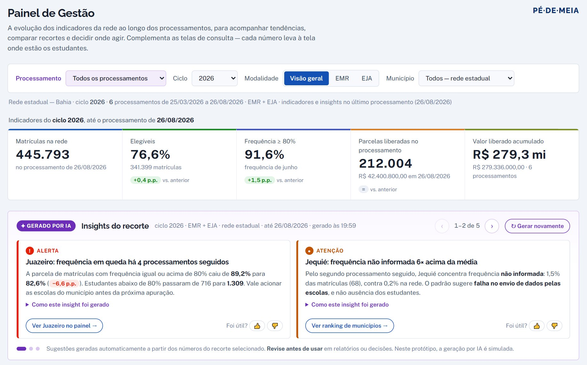
Matrículas na rede, % elegível, frequência ≥ 80%, parcelas liberadas no processamento e valor liberado acumulado — todos do mesmo recorte, dito numa linha acima deles (“Indicadores do ciclo 2026, até o processamento de 26/08/2026”). Os que comparam mostram a variação contra o processamento anterior (verde quando melhora, vermelho quando piora).
Num painel de evolução, escolher um processamento não pode esconder a série — senão some a tendência. Por isso ele funciona como processamento de referência, ou seja, “como estava naquela data”:
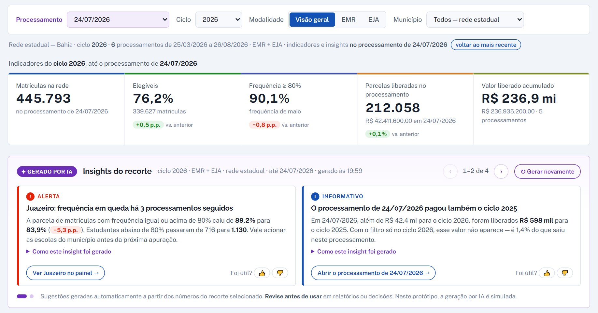
O painel traz até cinco insights escritos sobre o recorte. Eles aparecem num carrossel de uma linha — dois cartões por vez, com setas, contador (“1–2 de 5”) e pontos — para ocupar pouco espaço vertical. Cada cartão tem:
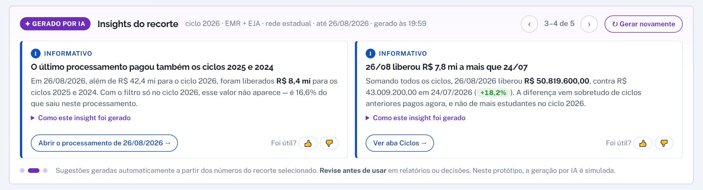
Os textos saem de regras fixas aplicadas aos números do recorte e mudam com os filtros. Não há chamada a modelo de IA, nem envio de dados. As regras: queda de frequência em 3 ou mais processamentos seguidos num município; frequência não informada 3× acima da média em dois processamentos seguidos; processamento que pagou outros ciclos; variação do valor liberado; evolução da elegibilidade e da pendência bancária.
Todas seguem o mesmo padrão: um gráfico de composição (barras empilhadas), um de tendência (linha), uma tabela comparativa com Δ em relação ao processamento anterior e a linha do processamento de referência destacada, e o bloco de exportação. Os gráficos trazem os valores escritos (total de cada barra, partes que cabem, cada ponto da linha); passar o mouse mostra os valores exatos.
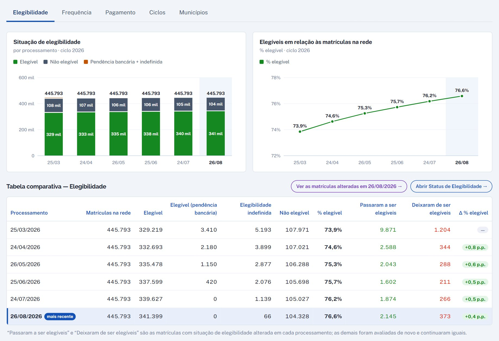
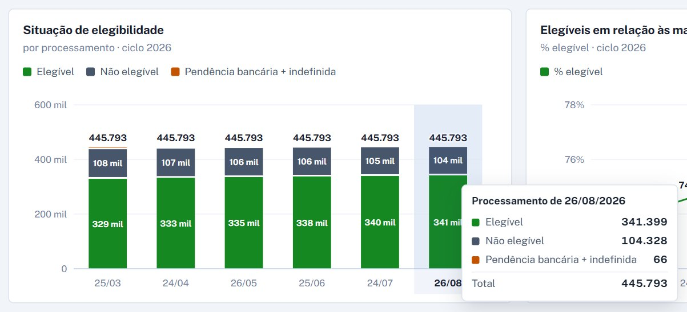
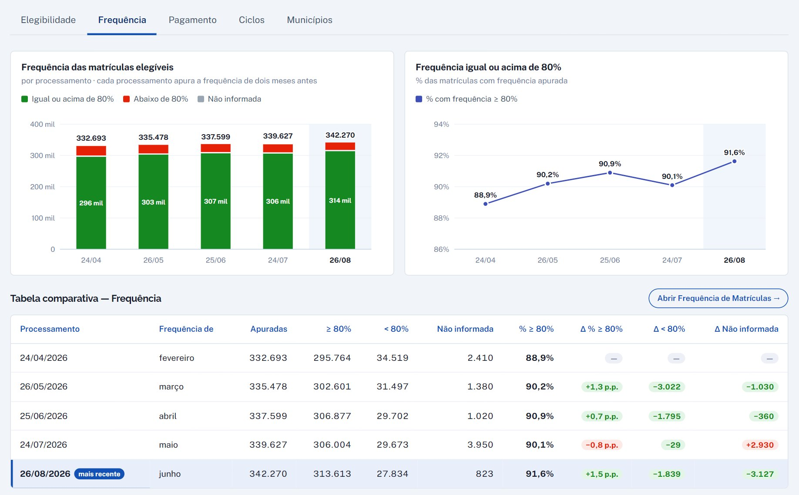
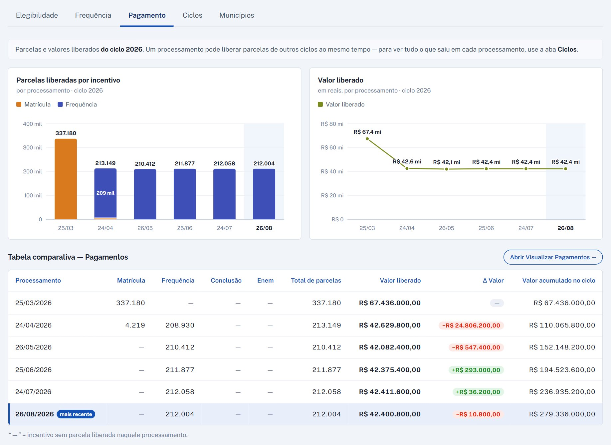
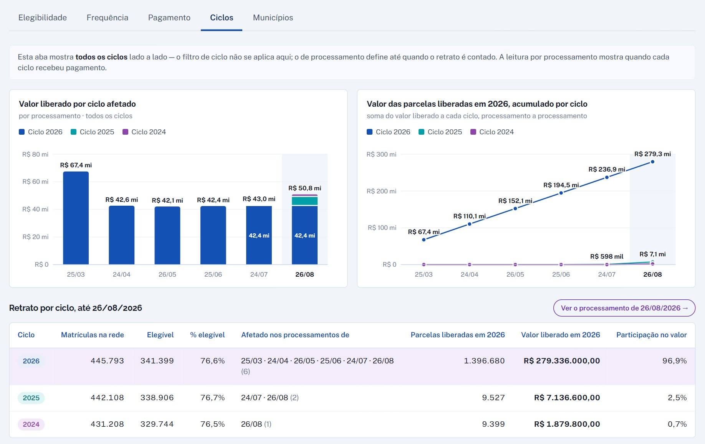
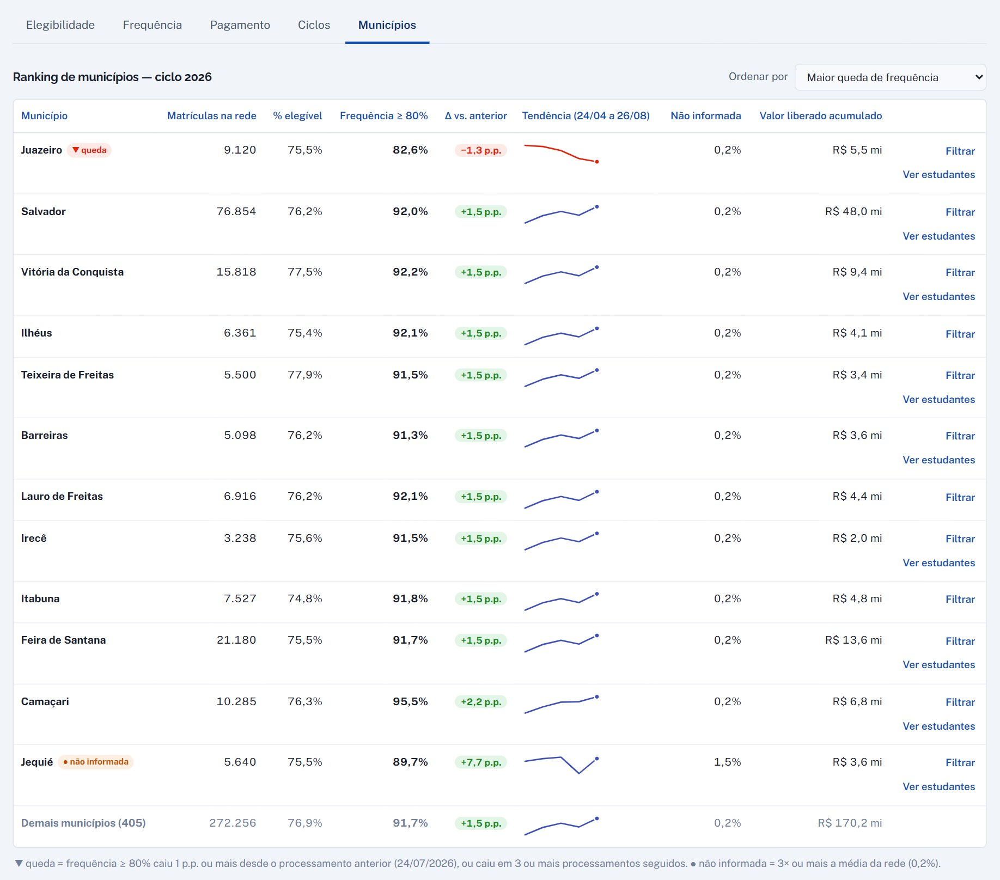
O painel não tem uma base própria: tudo é derivado dos dados que as telas de consulta já usam. Os pagamentos são exatamente as parcelas de cada processamento; a elegibilidade parte do retrato final de cada ciclo e volta no tempo com as alterações registradas em cada processamento; a frequência termina igual aos cartões da tela Início. A divisão por modalidade e por município é feita de modo que a soma das partes feche exatamente com o total.
Conferido automaticamente: 36 checagens (valor e parcelas de cada processamento, retrato de cada ciclo, “passaram a/deixaram de ser elegíveis”, partições EMR/EJA e municípios) e mais de mil combinações de tela nas versões A e B, sem erro, sem valores vazios e sem o termo “janela” na versão A. Exemplos: o total de agosto é R$ 50.819.600,00; agosto liberou R$ 7.810.400,00 a mais que julho; o ciclo 2024 recebeu R$ 1.879.800,00 em agosto.
Fonte: aba Registro da planilha de testes de usabilidade — cinco sessões (P1 CGARB/MEC; P2 IFPA; P3 IFSP; P4 rede estadual do MT; P5 rede estadual do ES), 15 tarefas cada, e as perguntas abertas. Sucesso por tarefa, com as cinco sessões:
| Tarefa | Concluíram | O que aconteceu |
|---|---|---|
| 11 · Aguardando pagamento na janela de agosto | 1 de 5 | Leram a paginação da lista (14), o cartão de outro ciclo (1.609) ou procuraram no fim da lista. |
| 4 · Parcelas liberadas em agosto | 2 de 5 | O ciclo ficou em 2026 depois de escolher o processamento: viram 212.004 em vez de 227.942. |
| 7 · Matrículas de 2024 com elegibilidade alterada | 3 de 5 | Confusão entre matrícula processada e matrícula alterada. |
| 13 · Frequência abaixo de 80% | 3 de 5 | Filtros de tarefas anteriores (processamento, ciclo, NIS na busca) continuavam ativos. |
| 2 · Matrículas processadas | 4 de 5 | Dúvida entre “matrículas na rede” e “matrículas processadas”. |
| Demais tarefas | 4 ou 5 de 5 | Utilidade alta para saber quando a situação de um estudante mudou (tarefa 14: nota 5 em todas as sessões). |
Nas perguntas abertas, os pedidos que mais se repetiram foram: ver quais estudantes foram afetados (P2, P3 e P4), a trajetória do estudante com datas e motivos, filtros que não fiquem presos entre telas e busca por CPF ou código do estudante em vez do NIS (4 de 5 não usam o NIS).
| # | Mudança | Por quê (evidência) | Onde |
|---|---|---|---|
| M1 | Filtros que não ficam presos. Trocar de tela pelo menu volta os filtros ao padrão; atalhos (“Ver…”, cartões, links do painel) levam o recorte junto. Etiquetas “Filtros em uso”, cada uma removível, e “Limpar filtros”. | Tarefa 13 (P1, P4), tarefa 15 (P2); sugestões de P2 e P5. P4 pediu o contrário ao clicar numa situação — atendido pelos atalhos. | Elegibilidade, Frequência, Pagamento |
| M2 | Ciclo acompanha o processamento. Escolher um processamento põe o ciclo em “todos os ciclos do processamento”. | Tarefa 4 (P5: 212.004) e tarefa 11 (P4: 1.609). | Filtros das telas de consulta |
| M3 | Cartões que filtram e total em destaque. Clicar num cartão ou numa situação filtra a lista; o total do recorte fica grande acima dela. | Tarefa 11 (P2, P3, P4); P3 na tarefa 8; P4 na tarefa 6. | Elegibilidade, Pagamento |
| M4 | Conceitos explicados. “Matrículas processadas” com explicação; “situação alterada” aberta em passaram a elegível × deixaram de ser elegíveis. | Tarefas 2 (P1, P3, P5), 3 (P3) e 7 (P4, P5). | Início, detalhe, painel |
| M5 | Aviso de ciclos anteriores com “Por que isso acontece?”, e etiqueta na lista de processamentos. | P3 (utilidade 1: “precisa ser explicado”) e P5 (sugeriu o alerta para pessoas novas na equipe). | Início, detalhe, lista |
| M6 | Ver quem foi afetado. “Ver as N alteradas” por ciclo e o filtro “Só com situação alterada”, com a coluna “Antes”. | Pedido de 3 das 5 sessões (P2, P3 nas tarefas 9 e 10, P4 no fechamento). | Detalhe, Elegibilidade, painel |
| M7 | Trajetória do estudante: processamento a processamento, situação antes → depois, motivo e parcelas; a parcela clicada aparece primeiro. | P5 (caso do Ministério Público), P3 e P5 na tarefa 15, P4 na tarefa 14. | Detalhe do estudante |
| M8 | Parcela do incentivo visível (“Frequência · 4ª parcela”). | P4 na tarefa 10. | Pagamento, detalhe |
| M9 | Busca por CPF, nome, matrícula ou código do estudante; o NIS segue aceito, fora do destaque. | Tarefa 12: P2 a P5 não usam o NIS; P4 pediu o código. | Buscas e listas |
| M10 | Exportação que diz o recorte e o que vem na planilha. | P5 na tarefa 13; P2 nas tarefas 5 e 10. | Listas e painel |
| L1 | Processamento no topo do Início, antes dos totais. | Pedido após as entrevistas; P4 na tarefa 1. | Início |
| L2 | Listas em destaque nas telas de consulta. | Várias redes tiveram dificuldade de achar as listas. | Elegibilidade, Frequência, Pagamento |
| L3 | Situações de pagamento com cores que significam algo. | P4 na tarefa 11: as cores “não trazem informação”. | Pagamento |
O bloco do processamento passou a ser o destaque da tela: vem logo depois dos filtros, antes dos totais. Ele também acompanha o filtro — com um processamento escolhido, mostra esse processamento (a P3 apontou que “o card não muda com o filtro”). Abaixo dele entram a explicação de “matrículas processadas” (ícone ⓘ e a contagem de alteradas) e o aviso de ciclos anteriores.
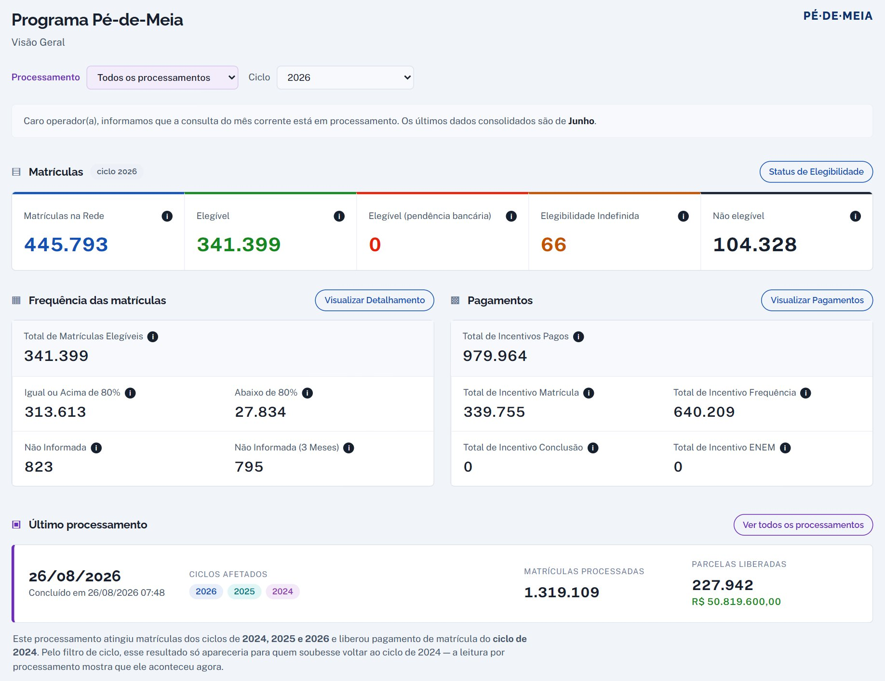
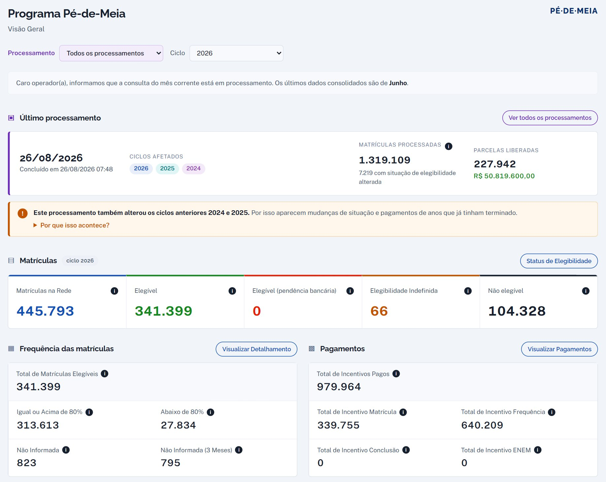
Ao abrir, o aviso explica: um ciclo anterior volta a ser processado quando chegam informações que mudam a situação de estudantes daquele ano — por exemplo, frequência ou conclusão informadas depois do prazo, ou uma correção de cadastro autorizada pelas normas do Programa. Se a situação muda, as parcelas a que o estudante passou a ter direito são liberadas agora, mesmo sendo de outro ciclo. Texto-base a validar com o MEC.
Nas telas de Elegibilidade, Frequência e Pagamento, a lista é o destaque: começa logo abaixo dos cartões, com um cabeçalho que traz o total do recorte em número grande e quantos registros a página exibe. A exportação foi para depois da lista. Os cartões viraram filtro: clicar em “Não elegível” mostra só essa situação, e o cartão fica marcado.
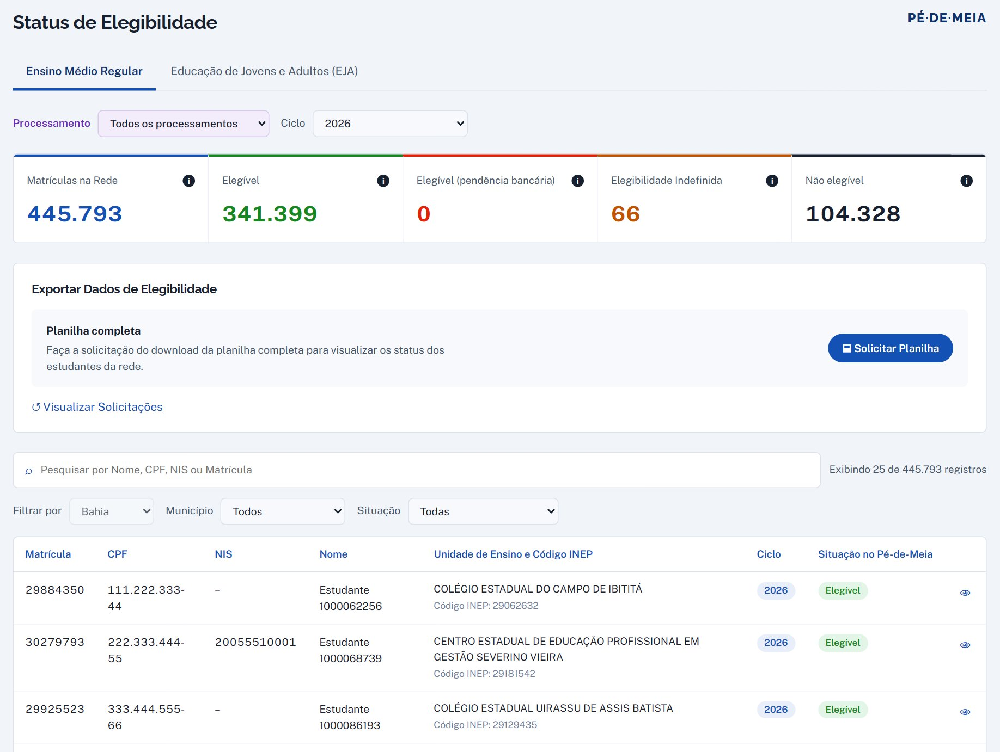
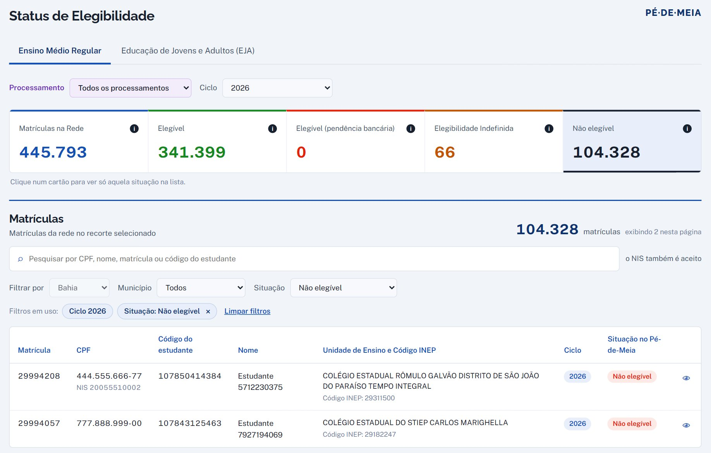
Uma rede apontou que as cores dos cartões de situação “não trazem informação”: cada cartão tinha uma borda de cor diferente, sem significado. Os nove cartões viraram uma barra e três grupos, em que a cor diz a categoria da situação — sempre com ícone e nome, nunca só a cor:
As situações sem parcelas ficam numa linha (“Sem parcelas: …”), em vez de ocupar um cartão com zero. Clicar numa situação filtra a lista.
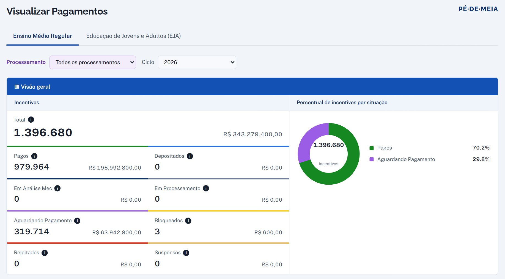
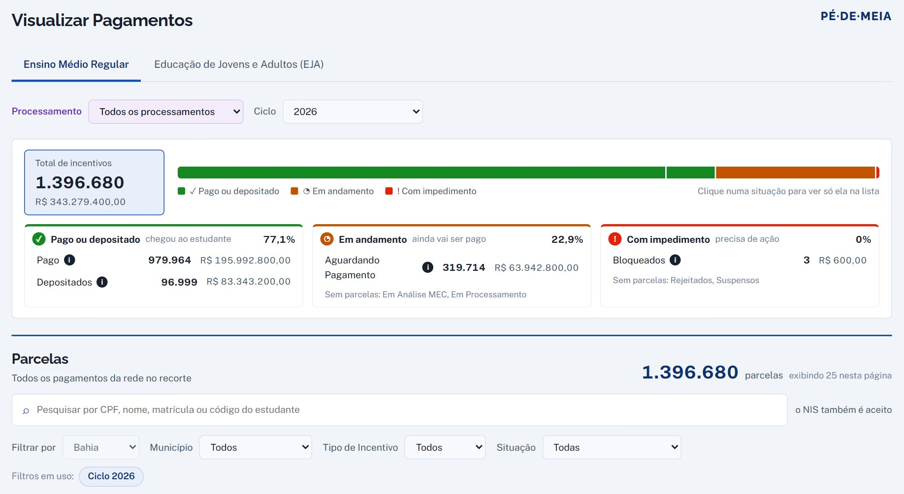
No consolidado da base, Pagos + Aguardando + Bloqueados somavam 1.299.681 de um total de 1.396.680 — a rosca antiga escondia a diferença. Na versão nova, as 96.999 parcelas restantes aparecem como Depositados, para as situações fecharem com o total.
Escolher o processamento de 26/08 já abre todos os ciclos dele (M2). Clicar em “Aguardando Pagamento” filtra a lista, e o total — 56.074 parcelas — aparece grande no cabeçalho, separado de “exibindo 14 nesta página” (M3). As etiquetas mostram o recorte completo (M1). A tarefa 4 segue o mesmo caminho e chega a 227.942 parcelas.
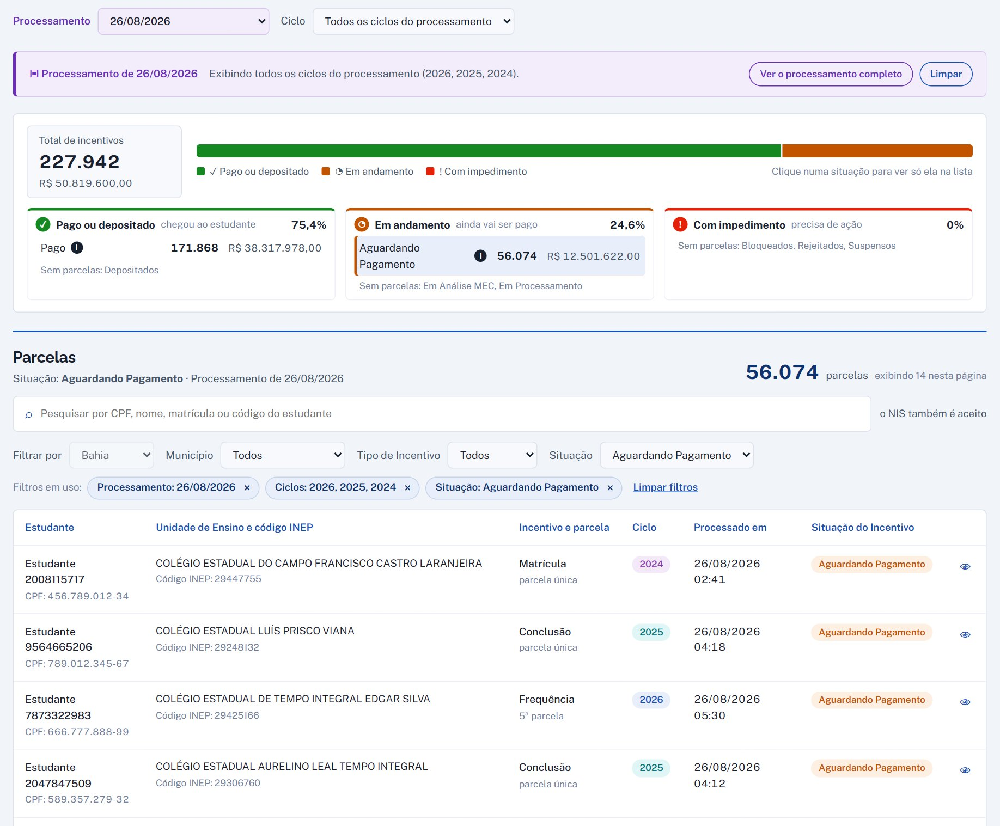
No detalhe do processamento, a tabela “O que foi processado, por ciclo” ganhou uma explicação dos termos e duas colunas que abrem a situação alterada: passaram a elegível e deixaram de ser elegíveis. Em cada ciclo, o botão “Ver as N alteradas” leva à lista dos estudantes.
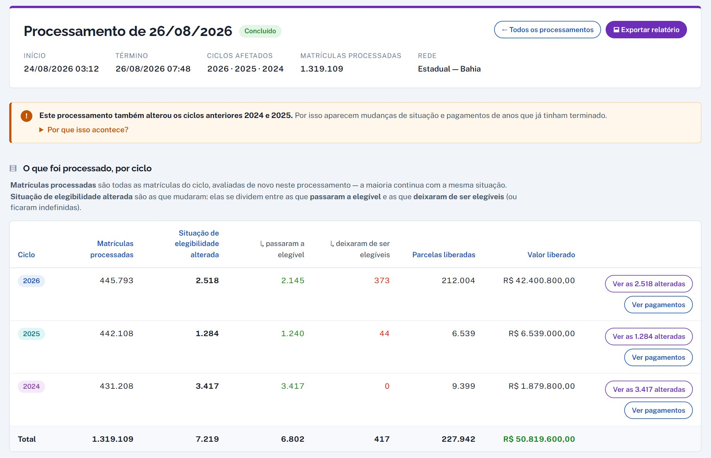
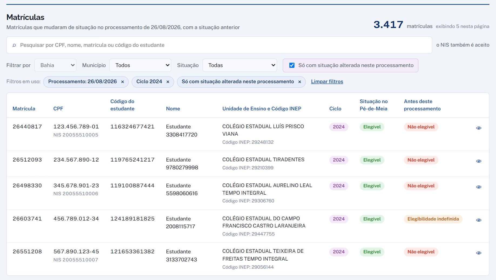
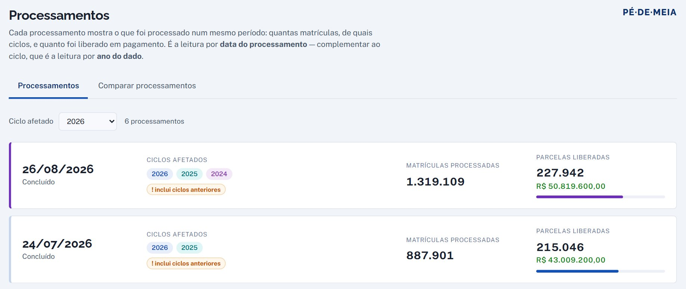
O detalhe (o “olhinho”) virou a trajetória do estudante no Pé-de-Meia: uma linha do tempo, processamento a processamento, com a situação antes e depois, o motivo da mudança e as parcelas liberadas, com o número da parcela e a data do pagamento. Quando aberto pela linha de uma parcela, essa parcela aparece primeiro e destacada — a P5 disse que ver todas as parcelas juntas “confunde”.
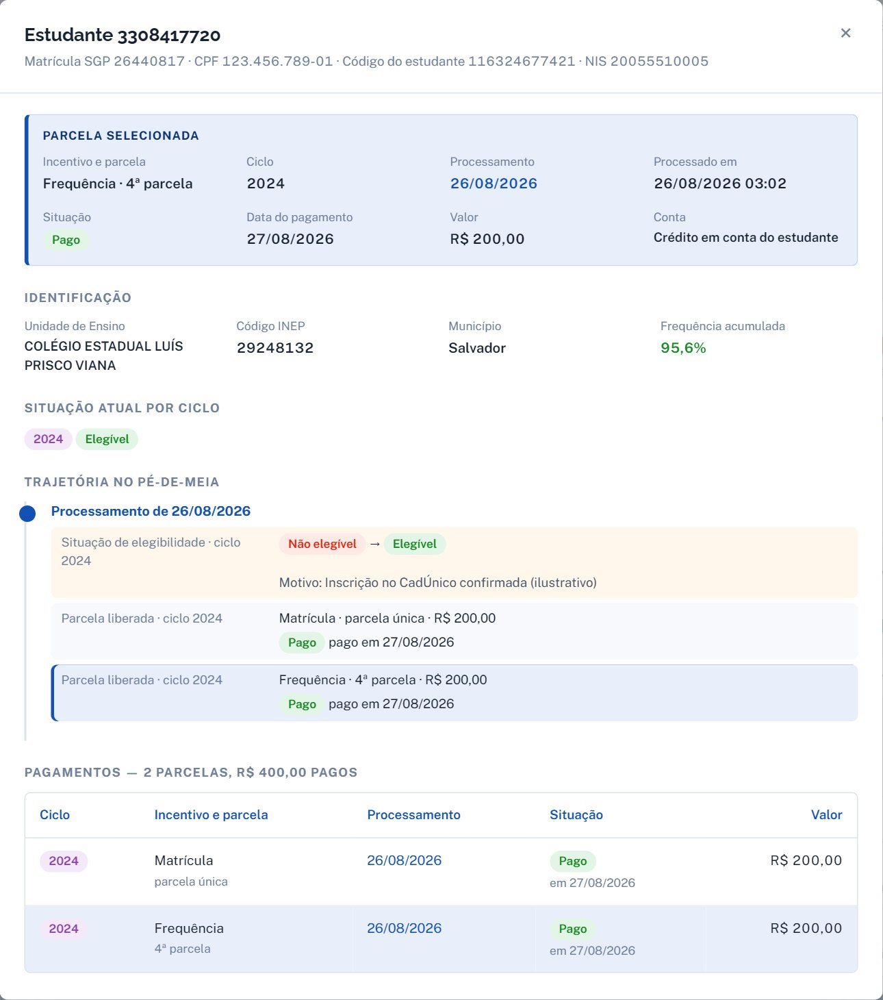
A busca aceita CPF, nome, matrícula e o código do estudante (fictício, 12 dígitos), que também aparece nas listas e no detalhe. O NIS continua aceito, mas saiu do destaque — quatro das cinco redes disseram que não o usam.
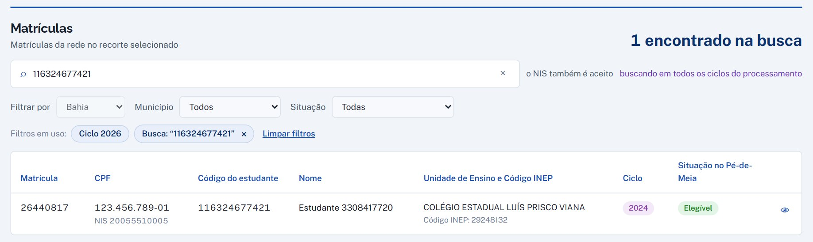
A exportação agora diz o que vem na planilha: “Planilha do recorte atual — N registros”, com o recorte descrito (processamento, ciclos, situação, município, busca) e as colunas (matrícula, CPF, código do estudante, ciclo, situação). No painel, a planilha traz os números por processamento e, numa segunda aba, a lista das matrículas do recorte — para as redes cruzarem com os painéis próprios, como P4 e P5 contaram que fazem.
| Assunto | Situação |
|---|---|
| “Aguardando Pagamento” → “Enviado para pagamento” (P3) | É um status oficial do Portal: levar como pergunta ao MEC. |
| Movimentação e transferência de estudantes — “onde o estudante está agora” (P5, P3) | Depende de dados de cadastro de fora do Pé-de-Meia. Backlog. |
| Data de solicitação do requerimento (P2) | Não ficou claro qual dado é. A esclarecer. |
| Planilha da EJA que não funciona (P3) | Defeito do portal real, não do protótipo. |
| Termo “processamento” (A) × “janela de processamento” (B) | Com duas sessões de cada, ainda não dá para concluir. |
| Textos a validar com o MEC | “Por que isso acontece?” do aviso de ciclos anteriores e os motivos de mudança de situação (ilustrativos). |
Se esta versão for para novas entrevistas: O roteiro atual foi feito para a versão anterior e seus gabaritos não valem aqui. Será preciso um roteiro próprio, incluindo tarefas para o Painel de Gestão.
fontes/painel-de-gestao.html → node gerar-pacote-gestao.mjs → deploy-gestao/PAINEL-DE-GESTAO.md (decisões, base de dados, conferências, comandos de publicação)sintese/ (texto, prints e scripts) → entregaveis/Pe-de-Meia-Painel-de-Gestao-sintese.pdffontes/janelas-de-processamento.html e deploy/ — inalteradosTrês fontes: a conversa com o time do MEC sobre o Painel de Gestão; o documento “Pontas a avaliar — Portal Pé-de-Meia” (04/11/2026), com observações do MEC e a sugestão de um operador; e a wiki “Elegibilidade” do Pé-de-Meia (NEES/UFAL), base dos motivos de inelegibilidade — status da matrícula, critérios (TCI) e os textos que o Portal mostra à rede.
| # | Ajuste | Origem | Onde |
|---|---|---|---|
| R1 | Cartões sem linha de tendência, com o recorte dito uma vez acima deles; “Valor liberado ao ciclo” vira Valor liberado acumulado. | MEC: as linhas confundem; “ao ciclo” valia para todos os cartões e só um dizia. | Painel |
| R2 | Sai a comparação EMR × EJA (aba, insight e divisão no cartão). O filtro de modalidade fica. | MEC: modalidades muito diferentes, não comparáveis; não aparece nos painéis atuais. | Painel |
| R3 | Municípios: sai a mensagem dos “12 municípios”; “Maior frequência não informada”; “Ver estudantes”. | MEC: a mensagem não se entendia; é um percentual. | Painel |
| R4 | Gráfico acumulado diz o que soma: “Valor das parcelas liberadas, acumulado por ciclo”. | MEC: “valor acumulado de quê?”. | Painel |
| R5 | Rótulos de dados em todos os gráficos. | MEC: as redes tiram print para apresentações e documentos. | Painel |
| R6 | Painel de motivos — não elegível e elegibilidade indefinida — no padrão do painel de pagamento, que filtra a lista. | MEC (Monitor já mostra) + wiki de Elegibilidade. | Elegibilidade |
| R7 | Motivo no detalhe do estudante, como no Portal atual: texto do status e os critérios, com o código. | MEC: já existe no Portal e faltava no protótipo. | Detalhe do estudante |
| R8 | Instrução dos cartões com o mesmo texto e acima deles. | Pontas a avaliar. | Elegibilidade, Pagamento |
| R9 | Trajetória do estudante do processamento mais recente para o mais antigo. | Pontas a avaliar. | Detalhe do estudante |
| R10 | “Comparar processamentos” em evidência: aba com selo e chamado no topo da lista. | Pontas a avaliar. | Processamentos |
| R11 | Plural padronizado: “passaram a ser elegíveis” / “deixaram de ser elegíveis”. | Pontas a avaliar. | Detalhe do processamento, painel |
| R12 | Calendário: o processamento aberto para envio de dados e os próximos, com a frequência e o período de envio de cada um. | Sugestão de um operador (Pontas a avaliar): “dá para criar uma agenda e se organizar”. | Processamentos |
| R13 | Aviso do Início reescrito: data do último processamento, frequência que ele apurou e o próximo previsto. | Pontas a avaliar: operadores responderam “junho” quando perguntados sobre o último processamento. | Início |
Os cartões perderam os minigráficos e a divisão EMR/EJA. Como todos falam do mesmo recorte — o ciclo escolhido até o processamento de referência —, isso agora é dito uma vez, numa linha acima deles, e nenhum cartão precisa repetir “ao ciclo”.
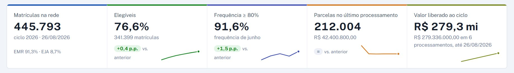
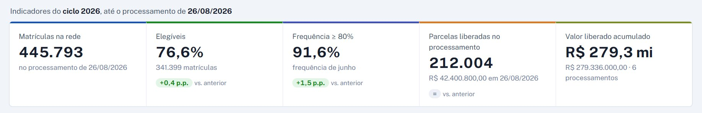
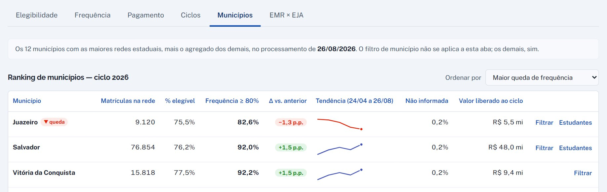
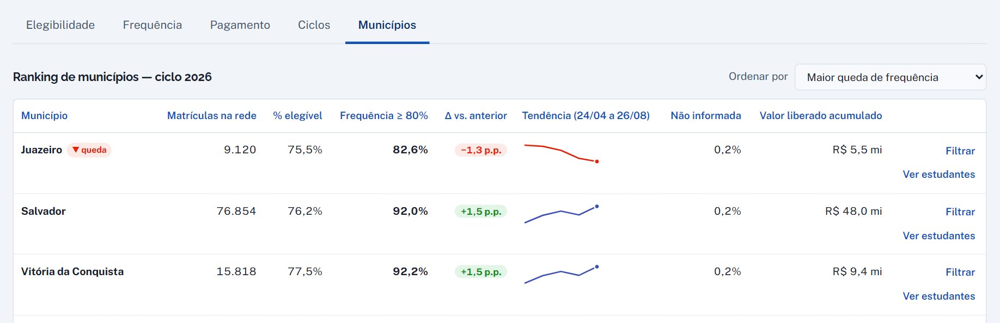
Cada barra mostra o total no topo e o valor de cada parte que couber dentro dela (texto branco ou escuro, conforme a cor); cada linha mostra o valor de todos os pontos. Quando dois rótulos se encostariam, um vai para baixo do ponto ou é omitido — o valor exato continua no detalhe ao passar o mouse. O gráfico acumulado ganhou um título que diz o que soma.
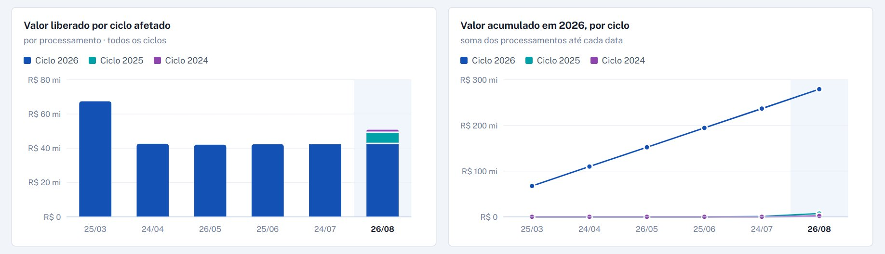
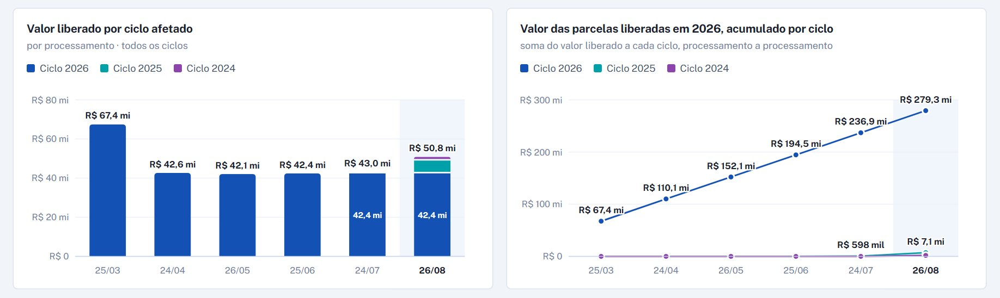
A tela Status de Elegibilidade ganhou, logo abaixo dos cartões, o painel Estudantes por motivo. Ele segue o padrão do painel de situações do Pagamento — grupos com a cor da situação, ícone e nome, linhas que filtram a lista — e organiza os motivos como a wiki de Elegibilidade:
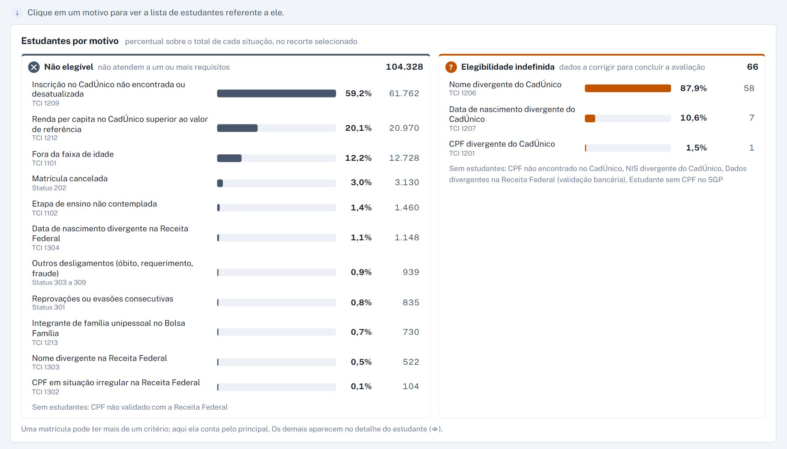
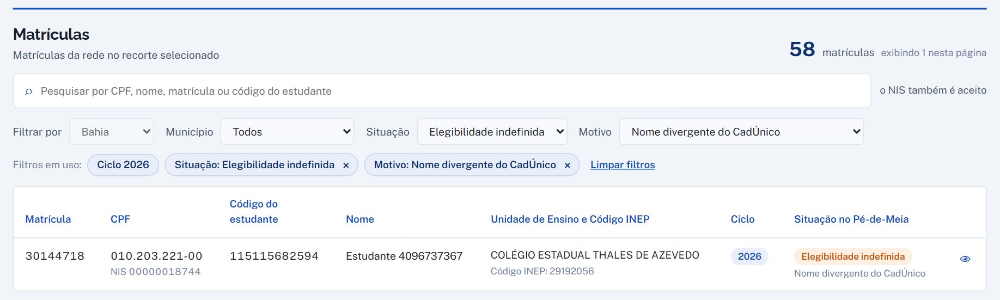
No detalhe do estudante (👁), cada ciclo que não está elegível ganha o bloco da situação, como no Portal: o texto do status e, quando há critérios, “Confira os critérios para a inelegibilidade” (não elegível) ou “Confira o detalhamento da situação” (indefinida), com a mensagem oficial para a rede. Uma matrícula pode ter mais de um critério — na distribuição ela conta pelo principal; no detalhe aparecem todos.
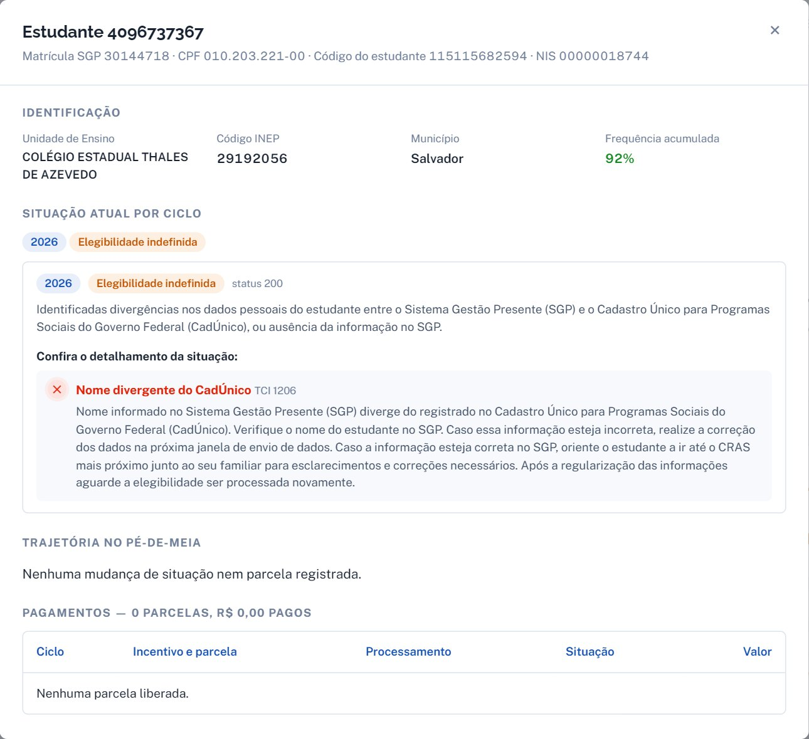
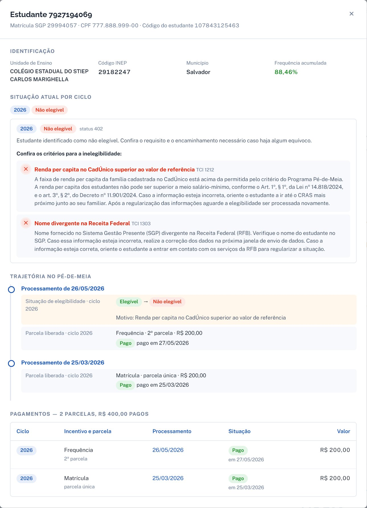
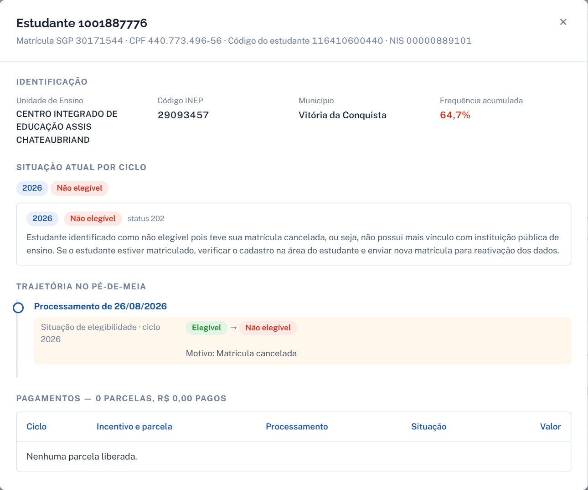
As quantidades por motivo saem de pesos ilustrativos, na ordem de grandeza do Monitor (CadÚnico ≈ 59%, renda ≈ 20%, idade ≈ 12% entre os não elegíveis; nome divergente ≈ 88% entre os indefinidos), e fecham exatamente com o total de cada cartão. Os textos são os da coluna “Descrição Rede” da wiki. Quatro estudantes de exemplo foram acrescentados à amostra (dois indefinidos, dois não elegíveis).
A instrução dos cartões passou a ter o mesmo texto nas duas telas e a vir acima deles, onde é lida antes do clique: “Clique em um card para ver a lista de estudantes referente à situação” (Elegibilidade) e “… referente às parcelas” (Pagamento).
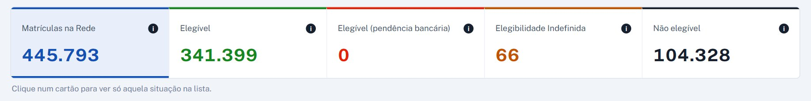
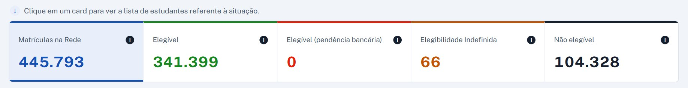
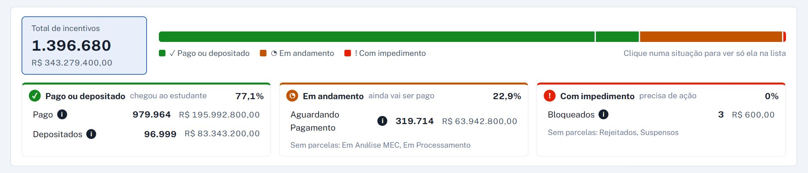
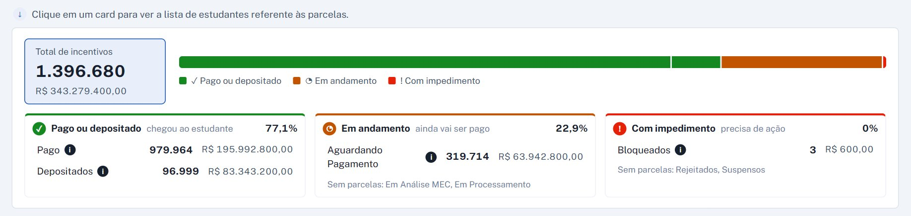
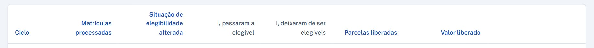
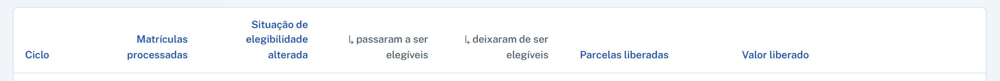
A trajetória do estudante passou a começar pelo processamento mais recente (exemplo na figura do estudante com dois critérios, acima).
A tela de Processamentos virou também uma agenda, como sugeriu um operador: acima dos concluídos aparecem o processamento aberto para envio de dados (em verde) e os próximos (em cinza, “Fechado”), cada um com a frequência que recebe e o período de envio. Os concluídos dizem que frequência apuraram. “Comparar processamentos” ganhou um chamado no topo e um selo na aba.
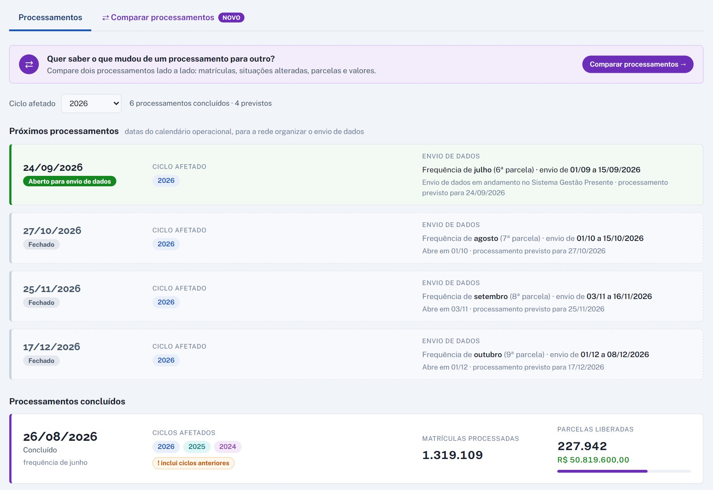
“Os últimos dados consolidados são de Junho” levava operadores a dizer que o último processamento foi em junho. O aviso agora separa as duas coisas: quando foi o processamento e de que mês é a frequência que ele apurou — e aponta o próximo, com link para o calendário.
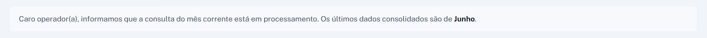
| Assunto | Situação |
|---|---|
| Datas do calendário (24/09, 27/10, 25/11 e 17/12) e períodos de envio | Ilustrativas. Trocar pelas do calendário operacional de 2026 (Portaria MEC nº 169/2026). |
| “Janela aberta” na versão A | Para não usar “janela” na versão A, ficou “Aberto para envio de dados” / “Fechado”; na B, “Janela aberta” / “Janela fechada”, como sugerido. |
| Mensagens oficiais citam “próxima janela de envio de dados” | Mantidas como na wiki, também na versão A. |
| Pesos dos motivos e o motivo “Matrícula cancelada” | Ilustrativos; o cancelamento entrou na distribuição (3,0%) porque é um caso de não elegível do Portal — por isso os percentuais não são idênticos aos do Monitor. |
| Motivos sem estudante na amostra | Mostram o número, mas não filtram a lista (mesmo padrão do Pagamento). |
| Minigráficos da tabela de Municípios | Mantidos (o pedido falava dos cartões). Dá para tirar, se o MEC preferir. |